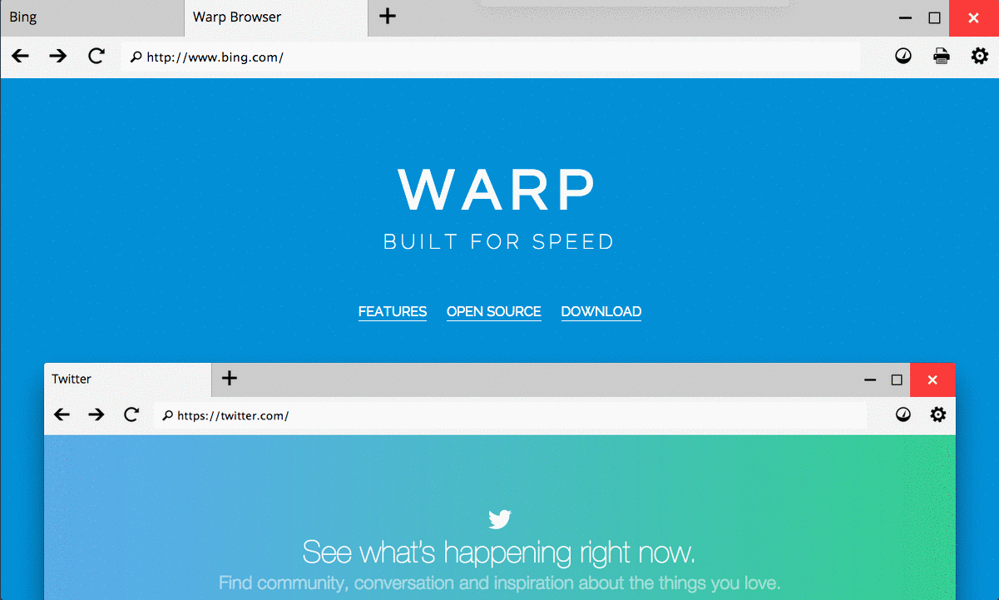

FEATURES
JUST WHAT YOU NEED
Warp is a simple browser. Its light-weight feature set keeps you browsing fast, allowing you to get things done.
TABS
DEVELOPER CONSOLE

DEVELOPER TOOLS
© 2015 — Warp Browser
Warp is a simple browser. Its light-weight feature set keeps you browsing fast, allowing you to get things done.